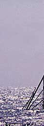
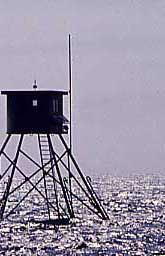
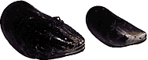

Birds
and Offshore Wind Turbines

Ornithologists'
(Bird watchers) tower erected next to the offshore wind farm
at Tunø Knob, Denmark, for a three-year avian study which
were completed in 1997.
Photograph © 1997
by Soren Krohn
 Offshore wind turbines have no significant effect
on water birds. That is the overall conclusion of a three year
offshore bird life study made at the Danish offshore wind farm
Tunø Knob.
Offshore wind turbines have no significant effect
on water birds. That is the overall conclusion of a three year
offshore bird life study made at the Danish offshore wind farm
Tunø Knob.
 The offshore wind park has been placed in
this particular area because of a very substantial population
of eiders (Somateria mollissima) and a small population
of scoters (Melanitta nigra). At Tunø Knob more
than 90 per cent of the birds are eiders, and about 40 per cent
of the North Atlantic population of eiders are wintering in the
Danish part of the Kattegat Sea.
The offshore wind park has been placed in
this particular area because of a very substantial population
of eiders (Somateria mollissima) and a small population
of scoters (Melanitta nigra). At Tunø Knob more
than 90 per cent of the birds are eiders, and about 40 per cent
of the North Atlantic population of eiders are wintering in the
Danish part of the Kattegat Sea.
 The Studies were conducted by the National
Environmental Research Institute at Kalø, Denmark.
The Studies were conducted by the National
Environmental Research Institute at Kalø, Denmark.
Eight
Different Studies
The very thorough study consists of both aerial surveys, bird
counts from observation towers, and observations of the spatial
distribution of birds at the offshore site as well as at a similar
control site in the same region.
 In the three year period some eight experiments
were carried out. The central experiment was a so called before-after-control-impact
study. From a watch tower placed one kilometre from the turbines
and from aeroplanes scientists mapped the population of eiders
the winter before the erection of the turbines and the following
two winters.
In the three year period some eight experiments
were carried out. The central experiment was a so called before-after-control-impact
study. From a watch tower placed one kilometre from the turbines
and from aeroplanes scientists mapped the population of eiders
the winter before the erection of the turbines and the following
two winters.
Declining
Population
During the three year period the number of Eiders declined by
75 per cent and the number of scoters declined by more than 90
per cent. But more interestingly, the population of water birds
fell in all of the shoal of the Tunø Knob and not just
around the turbines. This indicated that other factors than the
turbines had to be taken into account.
 At the same time the area was repeatedly
surveyed by divers in order to determine variations in the amount
of blue mussels (Mytilus edulis) which the birds prey
on.
At the same time the area was repeatedly
surveyed by divers in order to determine variations in the amount
of blue mussels (Mytilus edulis) which the birds prey
on.
Less
Food
The amount of blue mussels showed also great natural variation
over the three years. Especially the population of smaller mussels
which are the eiders' preferred prey fell significantly in the
three year period. With these findings in mind the scientific
group concluded that the changes in size and composition of the
blue mussel population could explain the variation in the number
of eiders before and after the construction of the wind farm.
Safe
Distance
Controlled experiments stopping the wind turbines for a certain
period has been performed. In another experiment decoys was used
to attract the eiders, which are very social birds.
 The result of the experiment using groups
of decoys at different distances from the wind farm showed that
the eiders were reluctant to pass at distances of 100 m or closer
to the turbines.
The result of the experiment using groups
of decoys at different distances from the wind farm showed that
the eiders were reluctant to pass at distances of 100 m or closer
to the turbines.
 The on/off experiment showed that there was
no detectable effect of revolving rotors on the abundance of
eiders in the area. In fact the eiders - like people - apparently
prefer rotating turbines (but that result was clearly insignificant).
The on/off experiment showed that there was
no detectable effect of revolving rotors on the abundance of
eiders in the area. In fact the eiders - like people - apparently
prefer rotating turbines (but that result was clearly insignificant).
 The overall conclusion of the final two experiments
were that on one hand the eiders do keep a safe distance to the
turbines, but on the other hand they do not get scared away from
their foraging areas by revolving rotors. Also, the eiders showed
normal landing behaviour until 100 m from the turbines.
The overall conclusion of the final two experiments
were that on one hand the eiders do keep a safe distance to the
turbines, but on the other hand they do not get scared away from
their foraging areas by revolving rotors. Also, the eiders showed
normal landing behaviour until 100 m from the turbines.
Mussels
Matter
 The prevalence
of eiders in the different zones around the turbines could be
fully accounted for by the relative abundance of food.
The prevalence
of eiders in the different zones around the turbines could be
fully accounted for by the relative abundance of food.
 The English edition of this study "Impact
Assessment of an Off-shore Wind Park on Sea Ducks, NERI Technical
Report No. 227 1998" is available from Miljøbutikken,
i.e. the Sales office of the
Danish Ministry of the Environment and Energy.
The English edition of this study "Impact
Assessment of an Off-shore Wind Park on Sea Ducks, NERI Technical
Report No. 227 1998" is available from Miljøbutikken,
i.e. the Sales office of the
Danish Ministry of the Environment and Energy.

© Copyright 1998 Soren Krohn. All rights reserved.
Updated 6 August 2000
http://www.windpower.org/tour/env/birdsoff.htm